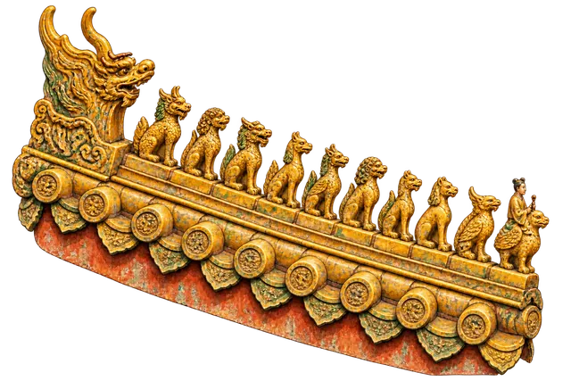

Forbidden City · details
The roof guardians of the Forbidden City
Last checked:

What are the little figures on the roofs?
They are ceramic guardians set in a line along the sloping ridges at the corners of the roofs: a man riding a bird at the front, followed by up to ten mythical beasts. The Hall of Supreme Harmony is the only building with all ten; most halls have nine, seven or five, and smaller gates fewer. The number tells you how important the building was.
What do the ten beasts mean?
In order from the front, behind the rider, the usual list is:
- Dragon, the emperor's own symbol.
- Phoenix, linked with the empress and with virtue.
- Lion, a guardian, as at the palace gates.
- Heavenly horse and
- Sea horse, which carry the emperor's authority across land and sea.
- Suanni, a lion-like beast said to love smoke and fire, often seen on incense burners.
- Yayu, a fish-tailed sea creature believed to bring rain and so to protect against fire.
- Xiezhi, a one-horned beast that can tell the guilty from the innocent, a symbol of justice.
- Douniu, a horned dragon-fish, another protector against fire and flood.
- Xingshi, a winged, monkey-like figure holding a vajra, the "tenth" beast found only on the Hall of Supreme Harmony.
Several of them have to do with water and fire. In a palace of wooden halls, fire was the greatest danger, and these figures were part of the defences, alongside the water vats in the courtyards.
Who is the man riding a bird?
He is usually called the immortal riding a phoenix, and he leads the procession to the edge of the roof. A popular story says he is a tyrant prince stranded at the edge with the beasts behind him to stop his escape; it is folklore, but guides like to tell it. The figures also had a practical job: they cover the nails that hold the ridge tiles in place.
Why is the number different on each building?
Under Qing building rules, the number of beasts matched the rank of the building, and it is usually odd. Walking north through the palace, you can watch it change: ten on the Hall of Supreme Harmony, fewer on the halls behind it, fewer still on side halls and gates. Counting them is a good game for children; see the Forbidden City with kids.
Where can I see them best?
- Hall of Supreme Harmony: stand at the east or west corner of the terrace and look up at the nearest roof corner. A phone zoom is enough to count to ten.
- Side halls and gates: lower roofs, so the figures are closer and easier to photograph.
- From Jingshan Park: not for the beasts, but for the whole sea of roofs they sit on; see the best view of the Forbidden City.
What about the big ornaments at the ends of the top ridge?
Those are chiwen, dragon-like creatures with open mouths that seem to bite the ridge. On the Hall of Supreme Harmony each one is 3.4 metres tall and weighs about 4.3 tonnes, far bigger than they look from the ground. Like the small beasts, they were believed to protect the building from fire.
Is there a story for the roof beasts in the app?
Yes. In Penyola the Ten Roof-Ridge Beasts are a point of their own on the Forbidden City map, with an illustration and a narrated story, next to the other details of the Hall of Supreme Harmony.